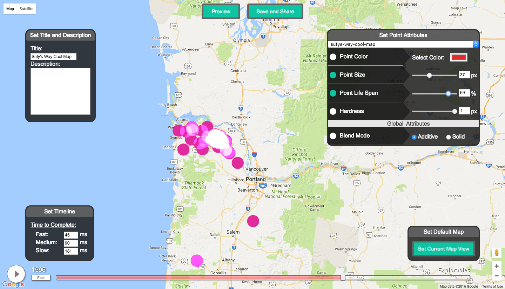

<!doctype html>
<html class="no-js" lang="">
    <head>
        <meta charset="utf-8">
        <meta http-equiv="X-UA-Compatible" content="IE=edge,chrome=1">
        <title></title>
        <meta name="description" content="">
        <meta name="viewport" content="width=device-width, initial-scale=1">

        <link rel="stylesheet" href="css/normalize.css">
        <link rel="stylesheet" href="css/main.css">

        <!--[if lt IE 9]>
            <script>document.write('<script src="js/vendor/html5shiv.js"><\/script>')</script>
        <![endif]-->
    </head>
    <body>
        <div class="module" data-type="circle" data-title=" Welcome! " data-content="<span style='position: absolute; transform: translateY(-50%) translateX(-50%)scale(1, -1);'>&#8682;</span>" data-color="rgb(215, 68, 115)"></div>
        
        <div class = "module" data-type="info-box" name="about" data-title="About Me"  
        data-content="<p>GitHub: <a target='_blank' href='https://github.com/sufyanAbbasi'><span style='word-wrap:break-word;'>github.com/sufyanAbbasi</span></a><br>LinkedIn: <a target='_blank' href='https://www.linkedin.com/in/sufyanabbasi'><span style='word-wrap:break-word;'>/in/sufyanabbasi</span></a>
        <br><br>
        My name is Sufyan Abbasi and I am a student at Vassar College and I develop web technologies to empower people to tell their unheard stories.
        <br><br>
        For the summers of 2015 and 2016, I worked at the Carnegie Mellon <a target='_blank' href='http://www.cmucreatelab.org'>CREATE Lab</a>, where I created websites that visualizes <a target='blank_' href='https://esdr.cmucreatelab.org/browse/#time=1435969143.7133596,1436358589.6325681&zoom=4&center=37.597816015274745,-92.65052871704097&color=pm25&cursor=1435981802.7795138&checked=pm25'>over 20,000 air quality sensors</a> and the flow of <a target='blank_' href='http://explorables.cmucreatelab.org/unreleased/sabbasi/refugees'>tens of thousands of refugees</a> arriving by boat in the Mediterranean.
        For the summer of 2017, I helped build the <a target='_blank' href='http://airwatchbayarea.org'>Air Watch Bay Area website</a> for fenceline communities around Bay Area refineries to report air pollution incidents in their communities. 
        <br><br>
        I am interested in continuing the mission and dedicate my life to using technology to help humanity and end climate change (fingers crossed).<br><br>Below are a list of projects that I have worked on.</p>"></div>

        <div class = "module" data-type="info-box" data-title="Projects"  
        data-content="
        <a name='air-watch' target='blank_' href='http://airwatchbayarea.org'><div class='text-overlay'>Air Watch Bay Area</div></a>
        <a name='refugees' target='blank_' href='http://explorables.cmucreatelab.org/unreleased/sabbasi/refugees'><div class='text-overlay'>Monthly Mediterranean<br>Refugee Visualization</div></a>
        <a name='esdr' target='blank_' href='https://esdr.cmucreatelab.org/browse/#time=1435969143.7133596,1436358589.6325681&zoom=4&center=37.597816015274745,-92.65052871704097&color=pm25&cursor=1435981802.7795138&checked=pm25'><div class='text-overlay'>ESDR Explorer</div></a>
        <a name='dot-map' target='blank_' href='http://create-maps.createlab.org'><div class='text-overlay'>Timelapse Toolchain UI</div></a>
        "
        ></div>

        <script src="https://ajax.googleapis.com/ajax/libs/jquery/3.1.0/jquery.min.js"></script>
        <script>window.jQuery || document.write('<script src="js/vendor/jquery-1.11.2.min.js"><\/script>')</script>
        <script type="text/javascript" src="js/vendor/raf.js"></script>
        <script src="js/scroll.js"></script>
        <script src="js/main.js"></script>
    </body>
</html>
